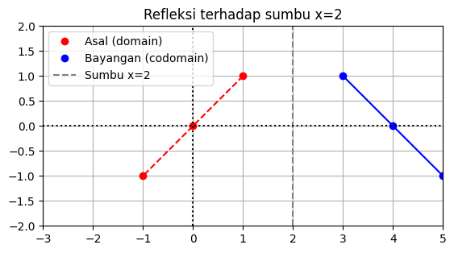
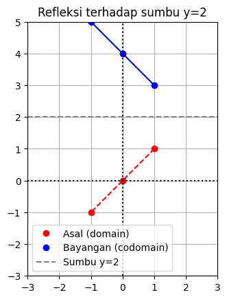
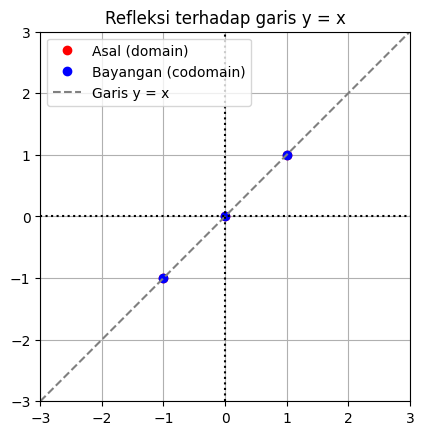

REFLEKSI#
Refleksi matriks (reflection matrix) adalah matriks transformasi yang mencerminkan (memantulkan) titik-titik dalam ruang terhadap sumbu, garis, bidang, atau titik tertentu.
Refleksi mengubah arah satu atau lebih komponen vektor, seperti bayangan di cermin.
Repleksi pada 2D (dua dimensi):#
Refleksi terhadap sumbu-x:
\[\begin{split}\begin{bmatrix}1 & 0 \\0 & -1\end{bmatrix}\begin{bmatrix}x \\y\end{bmatrix}=\begin{bmatrix}x \\-y\end{bmatrix}\end{split}\]
→ Membalik titik terhadap sumbu-x (nilai y dibalik, x tetap).
Refleksi terhadap sumbu-y:
\[\begin{split}\begin{bmatrix}-1 & 0 \\0 & 1\end{bmatrix}\begin{bmatrix}x \\y\end{bmatrix}= \begin{bmatrix}-x \\y\end{bmatrix}\end{split}\]
→ Membalik titik terhadap sumbu-y.
Refleksi terhadap garis y = x:
\[\begin{split}\begin{bmatrix}0 & 1 \\1 & 0\end{bmatrix}\begin{bmatrix}x \\y\end{bmatrix}= \begin{bmatrix}y \\x\end{bmatrix}\end{split}\]
→ Menukar posisi x dan y.
Repleksi pada 3D (tiga dimensi) :#
Refleksi bisa dilakukan terhadap bidang seperti \(x=0\), \(y=0\), atau \(z=0\). Contoh refleksi terhadap bidang \(x=0\):
\[\begin{split}\begin{bmatrix}
-1 & 0 & 0 \\
0 & 1 & 0 \\
0 & 0 & 1
\end{bmatrix}\end{split}\]
TUGAS#
Refleksi terhadap sumbu x=2
import numpy as np
import matplotlib.pyplot as plt
# Titik-titik asal (domain)
koordinats = np.array([[1, 0, -1], [1, 0, -1]])
x = koordinats[0, :]
y = koordinats[1, :]
# Langkah 1: Translasi ke kiri sejauh 2
koordinats_trans = koordinats.copy()
koordinats_trans[0, :] -= 2
# Langkah 2: Refleksi terhadap sumbu Y
B = np.array([[-1, 0],
[ 0, 1]])
B_trans = B @ koordinats_trans
# Langkah 3: Translasi balik ke kanan sejauh 2
B_trans[0, :] += 2
x_LT2 = B_trans[0, :]
y_LT2 = B_trans[1, :]
# Membuat gambar dan sumbu-sumbu
fig, ax = plt.subplots()
# Plot titik-titik
ax.plot(x, y, 'ro', label='Asal (domain)')
ax.plot(x_LT2, y_LT2, 'bo', label='Bayangan (codomain)')
# Menghubungkan titik-
ax.plot(x, y, 'r--')
ax.plot(x_LT2, y_LT2, 'b')
# Gambar garis bantu di x=2
ax.axvline(x=2, color="gray", ls="--", label='Sumbu x=2')
# Gambar sumbu-sumbu utama
ax.axvline(x=0, color="k", ls=":")
ax.axhline(y=0, color="k", ls=":")
# Properti plot
ax.grid(True)
ax.axis([-3, 5, -2, 2])
ax.set_aspect('equal')
ax.set_title("Refleksi terhadap sumbu x=2")
ax.legend()
plt.show()

Refleksi terhadap sumbu y=2
import numpy as np
import matplotlib.pyplot as plt
# Titik-titik asal (domain)
koordinats = np.array([[1, 0, -1], [1, 0, -1]])
x = koordinats[0, :]
y = koordinats[1, :]
# Langkah 1: Translasi ke bawah sejauh 2
koordinats_trans = koordinats.copy()
koordinats_trans[1, :] -= 2
# Langkah 2: Refleksi terhadap sumbu X
B = np.array([[1, 0],
[0, -1]])
B_trans = B @ koordinats_trans
# Langkah 3: Translasi balik ke atas sejauh 2
B_trans[1, :] += 2
x_LT2 = B_trans[0, :]
y_LT2 = B_trans[1, :]
# Membuat gambar dan sumbu-sumbu
fig, ax = plt.subplots()
# Plot titik-titik
ax.plot(x, y, 'ro', label='Asal (domain)')
ax.plot(x_LT2, y_LT2, 'bo', label='Bayangan (codomain)')
# Menghubungkan titik-
ax.plot(x, y, 'r--')
ax.plot(x_LT2, y_LT2, 'b')
# Gambar garis bantu di y=2
ax.axhline(y=2, color="gray", ls="--", label='Sumbu y=2')
# Gambar sumbu-sumbu utama
ax.axvline(x=0, color="k", ls=":")
ax.axhline(y=0, color="k", ls=":")
# Properti plot
ax.grid(True)
ax.axis([-3, 3, -3, 5])
ax.set_aspect('equal')
ax.set_title("Refleksi terhadap sumbu y=2")
ax.legend()
plt.show()

Refleksi terhadap sumbu y=x
import numpy as np
import matplotlib.pyplot as plt
# Titik-titik asal (domain)
koordinats = np.array([[1, 0, -1], [1, 0, -1]])
x = koordinats[0, :]
y = koordinats[1, :]
# Refleksi terhadap garis y = x
B = np.array([[0, 1],
[1, 0]])
B_trans = B @ koordinats
x_LT2 = B_trans[0, :]
y_LT2 = B_trans[1, :]
# Membuat gambar dan sumbu-sumbu
fig, ax = plt.subplots()
# Plot titik-titik
ax.plot(x, y, 'ro', label='Asal (domain)')
ax.plot(x_LT2, y_LT2, 'bo', label='Bayangan (codomain)')
# Menghubungkan titik-
for i in range(len(x)):
ax.plot([x[i], x_LT2[i]], [y[i], y_LT2[i]], 'k--')
# Gambar garis bantu y = x
x_garis = np.linspace(-3, 3, 100)
ax.plot(x_garis, x_garis, 'gray', ls='--', label='Garis y = x')
# Gambar sumbu-sumbu utama
ax.axvline(x=0, color="k", ls=":")
ax.axhline(y=0, color="k", ls=":")
# Properti plot
ax.grid(True)
ax.axis([-3, 3, -3, 3])
ax.set_aspect('equal')
ax.set_title("Refleksi terhadap garis y = x")
ax.legend()
plt.show()
